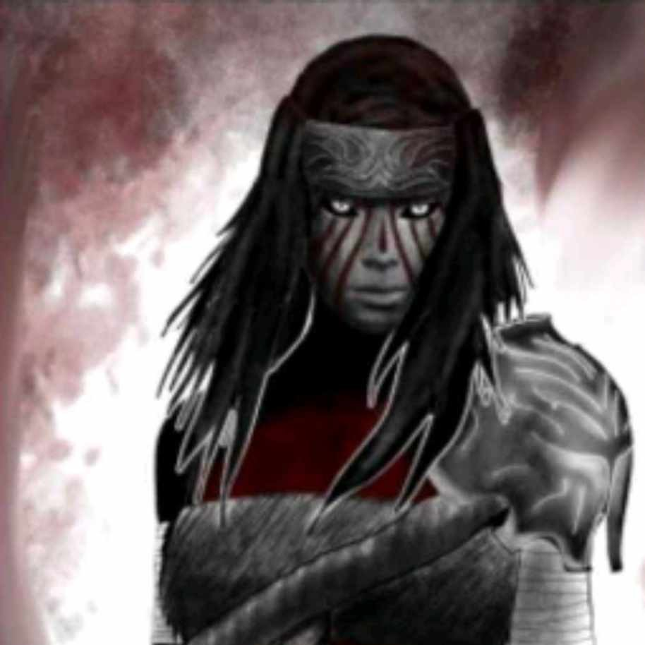

Walid
Cleric (Twilight) Tiefling of Zariel
HP
/28
Hit Dice
/3d8
Temp HP
Lvl
3
Ability Scores
STR
16
+3
DEX
10
+0
CON
14
+2
INT
10
+0
WIS
14
+2
CHA
8
-1
Saving Throws
STR : +3
DEX : +0
CON : +2
INT : +0
WIS : +4
CHA : +1
Skills
Acrobatics
+0
Animal Handling
+2
Arcana
+0
Athletics
+3
Deception
+0
History
+0
Insight
+2
Intimidation
+0
Investigation
+0
Medicine
+0
Nature
+0
Perception
+2
Performance
+0
Persuasion P
+2
Religion P
+2
Sleight of Hand
+0
Stealth
+0
Survival
+2
Stats
Armor Class
17
Initiative
+0
Speed
30
Passive Perception
14
Proficiency
+2
Spells Stats
Lvl 1 Spell Slots
/4
Lvl 2 Spell Slots
/2
Spell Save DC
14
Spell Attack Modifier
+4